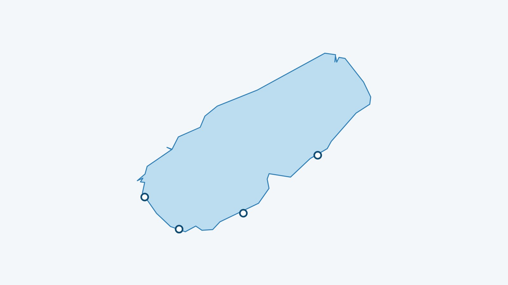

Kurz gesagt
Mein See zeigt die Wassertemperatur im Murtensee 70 cm unter der Oberfläche, alle drei Stunden aktualisiert aus dem Alplakes-Modell der Eawag. Das Modell ist dreidimensional: Der Wert wird vor jedem der 4 erfassten Badeplätze gelesen und kann sich deshalb von Ort zu Ort unterscheiden.
Woher kommt die Wassertemperatur im Murtensee?
Die Werte stammen von Alplakes, der Plattform der Eawag (Wasserforschungsinstitut des ETH-Bereichs). Sie verbindet numerische Seemodelle mit Satellitendaten und berechnet die Wassertemperatur in verschiedenen Tiefen. Die Daten stehen unter der Lizenz CC BY 4.0, und Mein See liest sie alle drei Stunden neu ein.
Für diesen See rechnet Alplakes ein dreidimensionales Modell. Mein See liest den Wert in 70 cm Tiefe am Modellpunkt vor jedem Badeplatz. Die Eawag nennt für die grossen Seen einen Fehler von rund 1 °C an der Oberfläche.
Ist das Wasser an allen Badeplätzen gleich warm?
Nein. Der Wind verschiebt das Oberflächenwasser, und flache Buchten erwärmen sich oder kühlen schneller ab als der offene See: Am selben Tag können zwei Badeplätze unterschiedliche Werte zeigen. Der aktuelle Unterschied wird weiter unten berechnet. Wie das funktioniert, erklärt mit gemessenen Beispielen unser Artikel zur Wassertemperatur im Genfersee.
Warum 70 cm unter der Oberfläche?
Weil das ungefähr das Wasser ist, in dem man schwimmt. Die oberste Schicht ändert sich mit Sonne und Luft sehr schnell; etwas tiefer ist der Wert stabiler und näher an dem, was man beim Hineingehen spürt.
Die 4 erfassten Badeplätze
Jeder Badeplatz hat eine eigene Seite, mit Wasser, Wind und einer Einschätzung fürs Baden und Paddeln.
Wo sieht man die Wassertemperatur im Murtensee live?
In der App Mein See, kostenlos und ohne Konto. Die Liste aller Badeplätze deckt auch die anderen Schweizer Seen ab.
Das Wasser im Murtensee im Moment
Die Wassertemperatur jedes Badeplatzes steht in der App Mein See, alle drei Stunden aktualisiert.